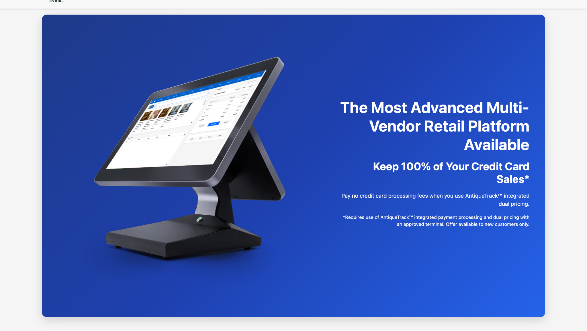
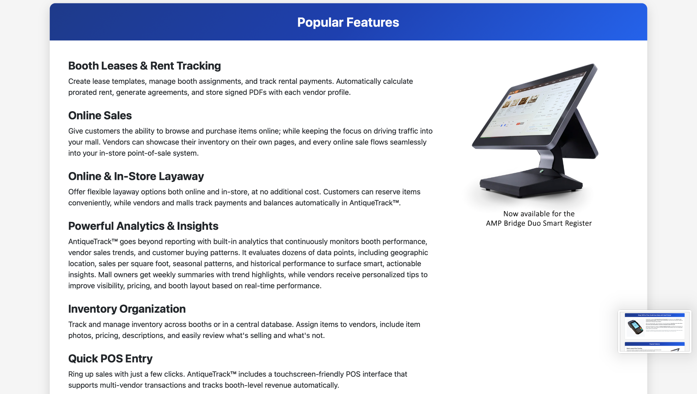
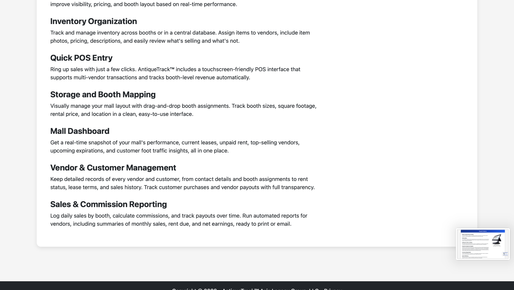
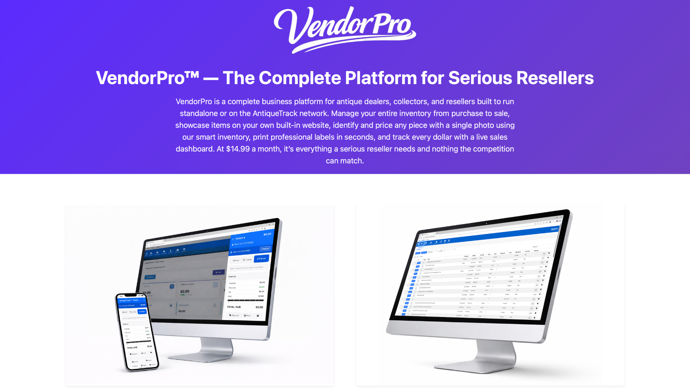
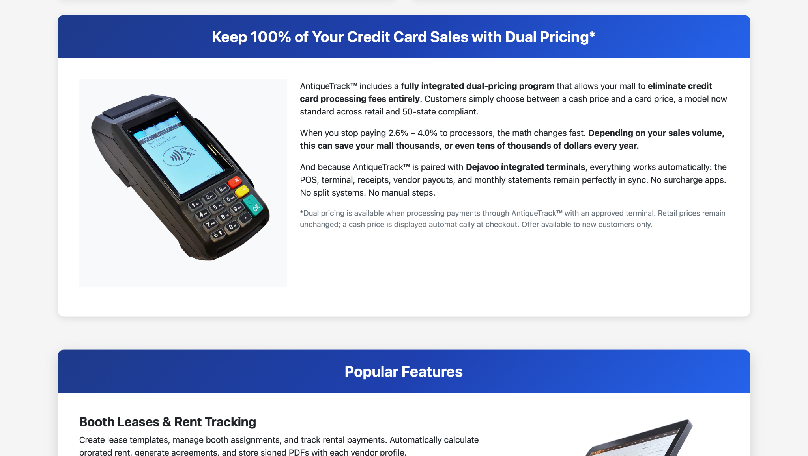

Too many disconnected systems
Replace spreadsheets, manual vendor statements, separate payment tools and fragmented reporting with one operating environment.
AntiqueTrack™ brings point of sale, vendors, inventory, leases, payments, reporting and online selling into one connected platform designed around the realities of antique malls and vintage retail.

Multi-vendor stores need more than a cash register. They need booth-level visibility, vendor payouts, leases, inventory, commission tracking, direct deposit, online selling and a system simple enough for a busy front counter.
Replace spreadsheets, manual vendor statements, separate payment tools and fragmented reporting with one operating environment.
Automate lease workflows, commission reporting, vendor notifications, inventory updates and month-end tasks.
See sales, inventory, vendor activity, rent, payouts and performance in real time—from one dashboard.
Configured around the business you operate today—and the one you're building next.
Fast touchscreen checkout with vendor-level sales tracking, manual or inventory-based entry and integrated receipts.
Manage booth assignments, prorated rent, lease generation, signatures and payment workflows digitally.
Track items, photos, pricing, descriptions, quantities, variants and vendor ownership in one place.
Give vendors real-time access to sales, inventory, notifications and reporting from mobile or desktop.
Connect card acceptance, vendor payouts, direct deposit and eligible dual-pricing programs to the platform.
Keep online inventory synchronized with the items already managed inside the platform.
Understand performance, sales trends, booth activity and operational data without living in spreadsheets.
Use advanced workflows for item identification, label creation, closeout assistance and other time-saving tasks.
From a single storefront to a large multi-vendor mall, AntiqueTrack™ is designed to keep checkout, vendors, inventory and business intelligence moving together.
Show me how it works →
Technology earns trust when it works in the middle of a real business—not just in a demo.
A Tennessee antique business described moving from an antiquated system into AntiqueTrack's cloud-based platform and seeing checkout become dramatically more efficient.
Rachel's & Peggy's Attic · TennesseeOne vendor reported photographing items, generating barcodes and pricing an entire cabinet in under an hour—a task that previously consumed an afternoon.
VendorPro workflowTemperance Antique Emporium opened a major multi-vendor space with hundreds of opening-day shoppers while the system kept sales and vendor activity moving in real time.
Temperance Antique Emporium · TennesseeAfter more than a year researching systems for a 20,000-square-foot antique mall, the owner of Temperance Antique Emporium chose AntiqueTrack™ because it felt modern, didn't require special hardware and could handle the real-world complexity of a multi-vendor launch.
“It's been such a relief to focus on running the store instead of wrestling with clunky software.”Request My Demo →

Serious antique dealers, collectors and resellers can manage inventory, sell from mobile or desktop, print labels, operate across booths and locations, see live analytics and publish inventory to a built-in storefront.


AntiqueTrack can pair the operating system with integrated payment acceptance so the POS, receipts, vendor accounting and eligible pricing programs remain connected.
Tell us about your store, mall or vendor operation. We'll connect you with a demo focused on how AntiqueTrack™ can fit the way your business actually runs.